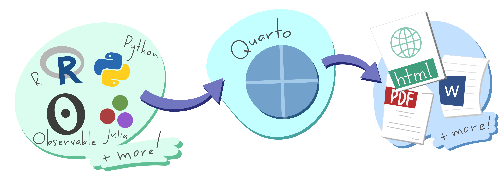

What is  ?
?
 ?
?An open-source, scientific and technical publishing system
Building on standard Markdown with features essential for scientific communication
Extended Pandoc Markdown for textual content
Multi-engine support for configurable computations
Various Output Formats

How to use Quarto?
Quarto integrates with other tools.


Quarto Workflow


Computations: Jupyter (and Knitr and ObservableJS)
Markdown: Pandoc
with many enhancements
Output: Documents, presentations, websites, books, blogs, …
Render Notebook to HTML (default options)


Render Notebook to HTML (document level options)

Render Notebook to HTML (document and cell level options)

Render Notebook to Revealjs — https://quarto.org/docs/presentations/revealjs/

Sidebars: Page Level

Sidebars: Global

Layout: Rows

Layout: Columns

Cards
Automatically created from cell’s output or Markdown content

Value Boxes
## Row
```{python}
#| component: valuebox
#| title: "Current Price"
dict(icon = "currency-dollar",
color = "secondary",
value = get_price(data))
```
```{python}
#| component: valuebox
#| title: "Change"
change = get_change(data)
dict(value = change['amount'],
icon = change['icon'],
color = change['color'])
```
Value Boxes
## Column - Medals by country {width=35%}
### Row - Value boxes {height=30%}
::: {.valuebox icon="award-fill" color="#d4af37"}
Most golds:
`{python} str(count_most_gold_medals)`
`{python} most_gold_medals`
:::
::: {.valuebox icon="award-fill" color="#c0c0c0"}
Most silvers:
`{python} str(count_most_silver_medals)`
`{python} most_silver_medals`
:::
::: {.valuebox icon="award-fill" color="#cd7f32"}
Most bronzes:
`{python} str(count_most_bronze_medals)`
`{python} most_bronze_medals`
:::
`{python} str(count_most_gold_medals)` is an inline code syntax that is supported in Quarto to easily mix Markdown text and computation output values.